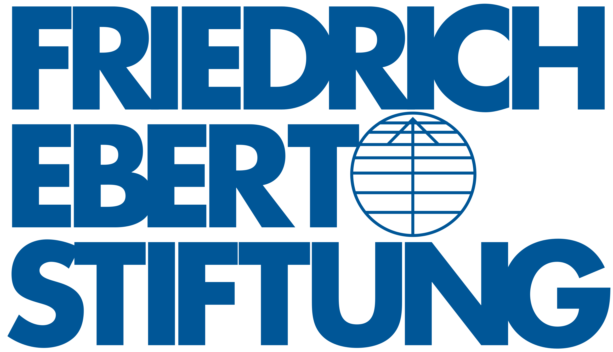

Tentang Kami

Program Kolaborasi dan Kerjasama antara:
Kementerian Koordinator Bidang Pembangunan Manusia dan Kebudayaan
Friedrich Ebert Stiftung (FES) Indonesia
Institut Teknologi Del
Program
Maksud diselenggarakan Program Peningkatan Kapasitas Kewirausahaan Pemuda di Kawasan Destinasi Danau Toba adalah untuk menggali, mengembangkan, dan memajukan potensi kewirausahaan pemuda di Kawasan Danau Toba melalui intervensi kegiatan peningkatan kapasitas usaha, serta pemahaman mendalam akan peran sentral pemuda sebagai penggerak ekonomi.
Tujuan
- Meningkatkan kapasitas kewirausahaan pemuda di Kawasan Danau Toba, mencakup keterampilan manajerial, inovasi, pemasaran, dan aspek-aspek lain yang diperlukan untuk sukses berwirausaha.
- Mendorong pemuda untuk menjadi agen perubahan pembangunan ekonomi lokal, mengukir kemandirian, dan menjadi pionir wirausaha di Danau Toba.
- Memberdayakan ekonomi lokal melalui kreativitas dan inovasi pemuda di Kawasan Danau Toba, sehingga potensi pariwisata tidak hanya dinikmati, tetapi juga memberikan dampak positif pada tingkat penghidupan masyarakat setempat.
- Mengurangi tingkat pengangguran pemuda di Kawasan Danau Toba dengan memberikan pelatihan, dukungan, dan peluang wirausaha, sehingga pemuda dapat aktif berkontribusi dalam pembangunan ekonomi.
- Membangun kolaborasi yang kuat antara pemerintah, lembaga non-pemerintah, lembaga pendidikan, lembaga swasta untuk mendukung dan menciptakan sinergi dalam pengembangan kewirausahaan pemuda.
Luaran Akhir Program
20 wirausaha pemuda di Kawasan Danau Toba yang akan mendapatkan pelatihan dan pendampingan intensif selama 5 bulan untuk mengembangkan produk (barang atau jasa).
Target Peserta
Program Peningkatan Kapasitas Kewirausahaan Pemuda di Kawasan Danau Toba, Sumatera Utara adalah program kerjasama antara Friedrich-Ebert-Stiftung (FES) Indonesia dengan Kementerian Koordinator Bidang Pembangunan Manusia dan Kebudayaan (Kemenko PMK) dengan Institut Teknologi Del (IT Del).
Rentang Usia
Pemuda (usia 22-35 tahun) yang memiliki usaha berjalan minimal 6 Bulan.
Usaha
Memiliki Usaha Jasa atau Produk Inovatif dan Kreatif.
Lokasi Usaha
Usaha di Kawasan Danau Toba : Kabupaten Toba, Samosir, Karo, Tapanuli Utara, Simalungun, Humbanghasundutan, Dairi, dan Pakpak Bharat.
Komitmen
Bersedia dan berkomitmen mengikuti rangkaian kegiatan Menuju Berdikari.
Program Kerjasama
-
Institut Teknologi Del

Profil Singkat Institut Teknologi Del
Institut Teknologi Del (IT Del) adalah institusi pendidikan tinggi di Indonesia yang menekankan pengembangan teknologi dan inovasi. Dengan komitmen untuk menciptakan lulusan yang siap bersaing di dunia industri, IT Del menjadi mitra strategis dalam program peningkatan kapasitas kewirausahaan pemuda di Kawasan Danau Toba. Institusi ini tidak hanya memberikan pendidikan tinggi berkualitas, tetapi juga mendukung inovasi dan pengembangan ekosistem kewirausahaan di kalangan mahasiswanya.
-
Kementerian Koordinator Bidang Pembangunan Manusia dan Kebudayaan

Profil Kementerian Koordinator Bidang Pembangunan Manusia dan Kebudayaan
Kementerian Koordinator Bidang Pembangunan Manusia dan Kebudayaan memiliki fokus utama dalam koordinasi, sinkronisasi dan pengendalian pembangunan sumber daya manusia dan kebudayaan di Indonesia. Unit kerja dari Kemenko PMK yang berperan dalam menjalankan program ini yaitu Asisten Deputi Pemberdayaan Pemuda, Deputi Bidang Koordinasi Peningkatan Kualitas Anak, Perempuan, dan Pemuda. Unit ini berperan dan bertanggung jawab untuk mengembangkan program dan kebijakan guna meningkatkan kualitas hidup anak, perempuan, dan pemuda, termasuk pemberdayaan dalam berbagai aspek kehidupan.
-
Friedrich-Ebert-Stiftung (FES) Indonesia

Profil Singkat Friedrich-Ebert-Stiftung (FES) Indonesia
Friedrich-Ebert-Stiftung (FES) Indonesia adalah lembaga nirlaba yang berdedikasi untuk mempromosikan nilai-nilai demokrasi sosial, keadilan, dan hak asasi manusia. Sebagai bagian dari jaringan global Friedrich Ebert Stiftung, FES Indonesia bekerja sama dengan pemerintah, organisasi masyarakat sipil, dan institusi akademis untuk mendukung pengembangan sosial, ekonomi, dan politik yang inklusif dan berkelanjutan di Indonesia
Panitia
Deskripsi Singkat
Our Team
Oppir Hutapea
Mentor
Semangat
oppir@gmail.com
Oppir Hutapea
Mentor
Semangat
oppir@gmail.com
Oppir Hutapea
Mentor
Semangat
oppir@gmail.com
Oppir Hutapea
Mentor
Semangat
oppir@gmail.com
Oppir Hutapea
Mentor
Semangat
oppir@gmail.com
Oppir Hutapea
Mentor
Semangat
oppir@gmail.com
Cara Pendaftaran
Dengan menargetkan peserta yang telah memiliki usaha berjalan dan memenuhi kriteria spesifik di atas, program ini bertujuan memberikan dukungan yang lebih terfokus dan relevan sesuai dengan tingkat pengembangan usaha masing-masing peserta. Program ini diharapkan dapat menjadi katalisator bagi pertumbuhan dan kemandirian wirausaha pemuda di Danau Toba.
F & Q
Apa saja kriteria untuk memastikan bahwa pemuda dan wirausaha yang diusulkan sesuai dengan kriteria yang diharapkan penyelenggara?
- Seleksi Administrasi
- Seleksi Substantif
- Seleksi Presentasi dan Wawancara
- Pengumuman Peserta Terseleksi
Berapa lama waktu yang dibutuhkan untuk pendampingan dan pelatihan?
Kurang Lebih 8 Bulan
Apa luaran dari program ini?
Luaran akhir program ini adalah terdapat 20 wirausaha pemuda di Kawasan Danau Toba yang akan mendapatkan pelatihan dan pendampingan intensif selama 5 bulan untuk mengembangkan produk (barang atau jasa)!
Seperti apa target peserta yang menjadi sasaran?
- Pemuda (usia 22-35 tahun) yang memiliki usaha berjalan minimal 6 Bulan.
- Memiliki Usaha Jasa atau Produk Inovatif dan Kreatif.
- Lokasi Usaha di Kawasan Danau Toba: Kabupaten Toba, Samosir, Karo, Tapanuli Utara, Simalungun, Humbanghasundutan, Dairi, dan Pakpak Bharat.
- Bersedia dan berkomitmen mengikuti rangkaian kegiatan Menuju Berdikari.